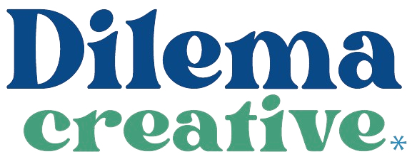

Flete internacional estimado
USD2.600 – 3.400
Contenedor completo 20 pies, puerto a puerto.

× Propuesta paraDP World ArgentinaAbrieron la unidad de forwarding hace nueve meses, con la mejor infraestructura del país: uno de cada cuatro contenedores entra por su terminal. Lo que falta es el motor comercial. La demanda que necesitan ya está identificada, con nombre y apellido, en la data pública de aduana. Y hoy, nadie la está yendo a buscar. Esta propuesta es ese motor.
DP World dejó de ser un operador portuario. Desde 2023 abrió más de 180 oficinas logísticas en el mundo, decenas de ellas en América. Es un despliegue global de freight forwarding montado sobre su red de puertos, no un experimento local.
En Argentina hay dos piezas. Una es Terminales Río de la Plata (TRP), Puerto Nuevo: la terminal de contenedores más grande del país, 430.000 m². La otra es la oficina logística de Buenos Aires, abierta el 26 de noviembre de 2025: marítimo y aéreo FCL y LCL, transporte doméstico, despacho aduanero, seguro de carga, depósito fiscal y no fiscal.
La unidad tiene nueve meses, cero cartera propia de forwarding y cero forma de generar demanda local. Y hay un dato que ordena toda la estrategia: el grueso de la demanda de forwarding no busca en Google, ya tiene proveedor. Al que factura hay que identificarlo e ir a buscarlo. Por eso el centro de esta propuesta es un motor de prospección, no una campaña.
El mercado logístico argentino se mide en decenas de miles de millones de dólares y las importaciones vienen en niveles récord. La desregulación 2024–2026 abrió una franja de importadores nuevos que antes no existía como mercado. Es el momento de tomar posición.
Las importaciones argentinas son data pública, con nombre del importador. Se sabe qué trae cada empresa, desde dónde, cuánto y con qué frecuencia. Para un forwarder eso es un mapa exacto de su mercado, y ningún competidor local lo está explotando de forma sistemática.
Auditoría de la presencia digital local
El plan ataca esta lista en orden de retorno: primero el motor de prospección, que no depende de ningún activo digital existente. La capa web llega al final (§ 07).
Seis cosas que salieron de investigar el negocio y la presencia digital. Las primeras dos abren la puerta, la tercera la mantiene abierta sin conflicto.
Operan la terminal por donde pasa cerca de uno de cada cuatro contenedores del país. Previsibilidad, menos demoras y estadía, trazabilidad real y un solo interlocutor del barco a la puerta. Ningún otro forwarder argentino puede decir esto.
El contacto local pasa por teléfono y mail, en horario de oficina. No hay un canal que capture y registre la consulta cuando entra, ni un sistema que la derive al vendedor. Cada consulta que no encuentra por dónde entrar es una operación que atiende otro.
Los forwarders que operan por TRP son clientes y ahora competidores. La salida limpia, y conviene que salga de nosotros: targetear con data pública de aduana, nunca con data de terminal. Segmento: dueño de la carga, no intermediarios.
Los sponsorships globales (golf, cricket, "Beyond Boundaries") construyen marca a nivel mundial. Es una fortaleza: liberan el foco local para lo único que falta, que es generar demanda en el jefe de comex argentino. No tocamos la marca: construimos la máquina de leads.
Si la plataforma de financiamiento de comercio de DP World está habilitada en el país, cambia el juego: en Argentina el dolor número uno del importador es el capital de trabajo, y un forwarder que además financia es una propuesta durísima. Sería un lead magnet potentísimo.
Andreani Global Logistic lanzó como agente de carga internacional. Es el competidor local más peligroso porque arranca con una base enorme de PyMEs ya clientes del grupo. La ventana no es infinita.
El centro de la propuesta: un solo flujo que arranca en la data de aduana y termina en una conversación con el decisor correcto. LinkedIn, email y cotización integrados, con filtrado automático en el medio. Los vendedores no manejan planillas: atienden conversaciones.
El universo completo de importadores, armado desde data pública: qué trae cada empresa, desde qué origen, cuánto y con qué frecuencia. El filtrado es automático: solo pasan los perfiles que encajan con los lanes y el tipo de cliente que definamos juntos.
Para cada empresa filtrada, la persona correcta: dueño, gerente de compras o jefe de comex, con su perfil de LinkedIn y su casilla corporativa verificada. Sales Navigator y enriquecimiento de datos, integrados al flujo.
Desde el perfil real de cada vendedor de DP World, personalizado por lane y producto: "Vi que traés X desde Ningbo cada dos meses. Operamos la terminal por donde entra tu carga. Mirémoslo punta a punta."
El seguimiento sale de la casilla corporativa real del vendedor, a ritmo bajo y sostenido, con opt-out en cada envío. Ningún mensaje sale de un dominio inventado ni en nombre de nadie.
Cuando el prospecto muestra interés, el vendedor no propone "una llamada para ver": manda un rango concreto para su lane, al instante. El diferencial de ser dueños de la terminal se demuestra en el primer intercambio, y se ahorra un paso entero del ciclo.
Todo corre sobre automatizaciones propias: quién está en qué paso, quién respondió, alerta inmediata al vendedor y cada conversación registrada con su origen. Nada depende de la memoria de nadie.
El complemento del motor. La minoría que sí busca activamente un forwarder es la demanda más caliente que existe, y hoy no hay nadie de DP World esperándola del otro lado.
Búsquedas que solo hace alguien que necesita mover carga: cotización de flete internacional, agente de carga, despacho de aduana. Cero volumen genérico, cero curiosos. Presupuesto acotado, puesto donde la decisión ya está en marcha.
Quien busca un forwarder por nombre está en modo proveedor. Aparecer en esa búsqueda con el diferencial de la terminal es de las inversiones más rentables del canal.
El que cotizó y no cerró, el que visitó y no dejó datos. En un ciclo de compra largo como el de logística, quedarse presente convierte varias veces mejor que el tráfico frío.
El motor genera conversaciones, cotizaciones y clientes, y todo eso necesita un lugar donde vivir. No tiene por qué ser un software cerrado ni depender de aprobaciones regionales: se construye a medida de la unidad, arrancando por lo mínimo y creciendo por módulos según lo que la operación pida.
El pipeline completo de la prospección: cada empresa, cada conversación con su historial, en qué paso está y de dónde salió. Alertas al vendedor, estados claros y atribución de cada cliente nuevo a su origen. Nace integrado al motor, no pegado después.
Clasificación automática de respuestas, priorización de prospectos, redacción asistida de secuencias, resúmenes de cuenta antes de cada llamada. La IA trabaja adentro del sistema, sobre los datos reales de la operación.
Seguimiento de cotizaciones enviadas contra cerradas, márgenes por operación, cuentas por cliente. El alcance exacto se define con ustedes: el sistema se diseña sobre necesidades reales, no al revés.
Mail y documentos integrados, reportes automáticos para la región, conexión con las herramientas que ya usan. Sin licencias por asiento y sin esperar el roadmap de un proveedor global: el sistema crece a la velocidad de la unidad.
El orden es por retorno: primero lo que genera conversaciones sin depender de ningún activo existente, después las capas que multiplican.
Lo de la § 03 funcionando de punta a punta: universo de aduana armado y filtrado, decisores identificados, secuencias aprobadas por ustedes, orquestación y registro de cada conversación. Es el canal de mayor retorno inmediato y no espera rankings ni algoritmos.
El canal natural del comprador corporativo, con los vendedores y la cara visible de la unidad al frente. Los posts de personas alcanzan mucho más que los de una página de empresa. La parte de contenido se coordina con su departamento de social media: ellos ya manejan la marca, nosotros ponemos el ángulo comercial y la lista de a quién llegarle. Después, publicidad dirigida a esas mismas empresas.
La red del fondo del embudo (§ 04): búsquedas de compra, marca de competidores y retargeting siempre encendido. Es también el canal que arranca más rápido: se enciende y captura demanda desde el primer día.
El CRM del flujo nace con el motor. Desde ahí, los módulos que la operación pida (§ 05): IA, finanzas, reporting regional.
Programa formal de referidos con despachantes de aduana y contadores de comex (rinden mucho más que los informales, y DP World ya tiene la relación por la terminal). Ferias con protocolo digital, Expo Logisti-k.
La frutilla del postre (§ 07). Un sitio local con cotizador es la puerta de entrada pública que hoy ningún operador argentino tiene, y es lo único que abre SEO y visibilidad en IA. Queda al final y como posibilidad a evaluar juntos: todo lo anterior funciona sin ella.
Todo lo anterior funciona sin tocar el sitio. Esta es la capa final y va como posibilidad a evaluar juntos: generar un sitio local propio, la puerta de entrada pública que hoy ningún operador argentino tiene. Con él se abren dos cosas que sin él no existen: el cotizador embebido y la visibilidad orgánica (SEO y GEO). Y el cotizador tiene una virtud aparte: no necesita el sitio para trabajar. Como herramienta con link propio, los vendedores lo pueden mandar dentro del flujo desde el primer día, precargado con el lane del prospecto.
Cotización online · DP World vs. la competencia
| Operador | Cotización online | Plataforma |
|---|---|---|
| DHL Global Forwarding | Sí | myDHLi Quote+Book |
| Kuehne+Nagel | Sí | myKN |
| DSV | Sí | Self services |
| Maersk | Sí | Booking propio |
| Flexport · Freightos | Sí | Cotización instantánea |
| DP World Argentina | No | Ni un formulario |
En B2B, la mayoría de las operaciones las gana el proveedor que responde primero. Flexport se construyó sobre la cotización instantánea, y DHL, Kuehne+Nagel y DSV convergieron todos a lo mismo. Es el estándar de la industria; DP World Argentina todavía no lo tiene.
Vive en un link propio. Puede embeberse en una página local cuando corresponda, o viajar en el flujo de prospección como lo que es: una demostración del diferencial.
Alerta al vendedor y contacto inmediato. Es un cambio de proceso, no de marketing, y es el de mayor impacto de toda la lista.
Con el sitio se abre otro canal: rankear por lane y producto en castellano, y trabajar para aparecer en las respuestas de las IA, donde hoy se cita a la competencia. Es una posibilidad que depende del sitio, no algo que exista sin él.
No es una cuenta de "manejame Meta". Es un sistema de adquisición completo, y ahí Dilema tiene todo el stack en un solo lugar.
| Necesidad | Qué ponemos |
|---|---|
| Prospección integrada: data de aduana, filtrado, secuencias, orquestación | Prospecting + Automatizaciones |
| Google Ads de intención, retargeting y publicidad dirigida en LinkedIn | Paid Media |
| Sistema a medida: CRM del flujo, módulos financieros, integraciones de IA | Programador Web |
| Nurturing por tipo de carga y estacionalidad | Email Marketing |
| Cotizador y, como posibilidad, un sitio propio con captura y atribución | Programador Web |
| Panel de leads, costo por lead, cotizaciones y embarques por fuente | Reporting & Analytics |
El pitch, en una frase